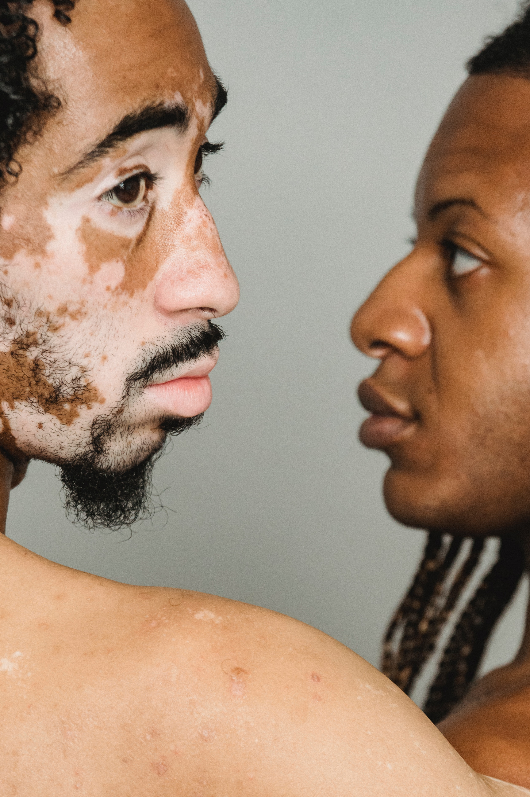
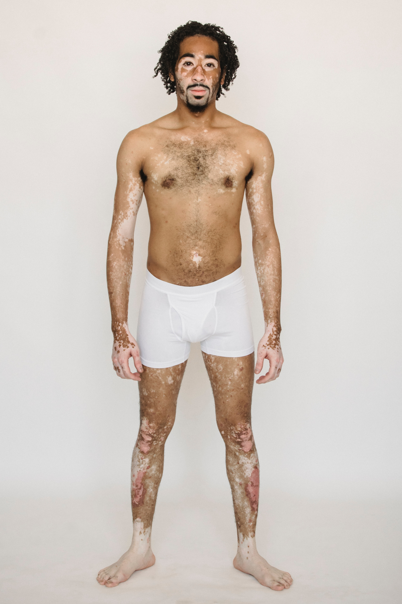
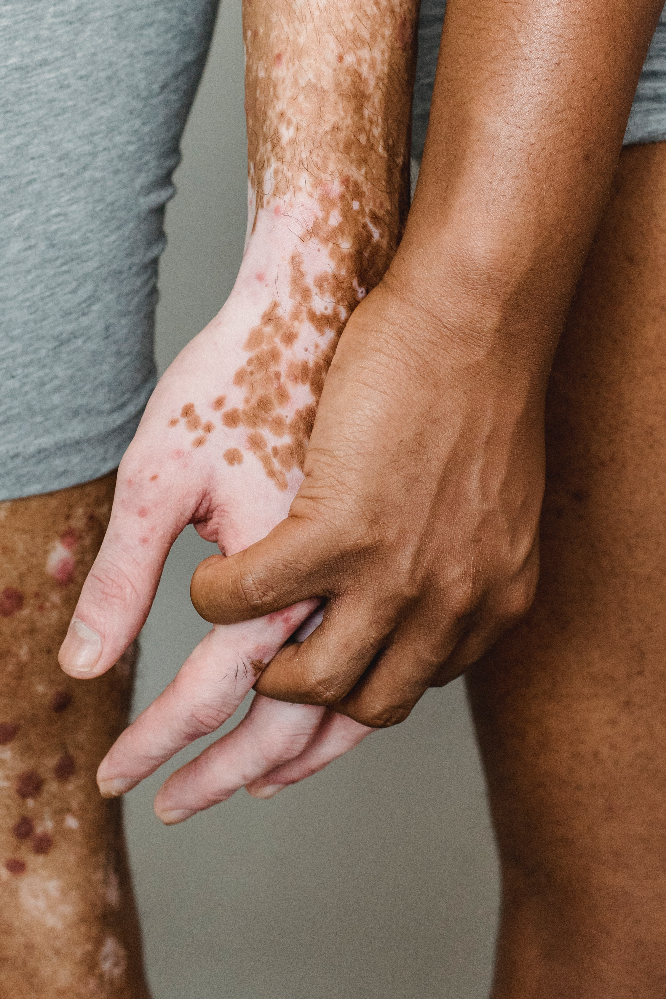

Apa itu Vitiligo?
penyakit yang menyebabkan hilangnya warna kulit dalam bentuk bercak dikarenakan sistem kekebalan tubuh menyerang dan menghancurkan sel-sel tubuh yang sehat, termasuk sel pigmen tubuh.
Vitiligo tergolong penyakit yang berlangsung jangka panjang (kronis), dan diperkirakan menimpa 1 dari 100 orang. Meskipun dapat menyerang semua orang, vitiligo umumnya terjadi sebelum usia 20 tahun, dan lebih jelas terlihat pada orang yang berkulit hitam.


